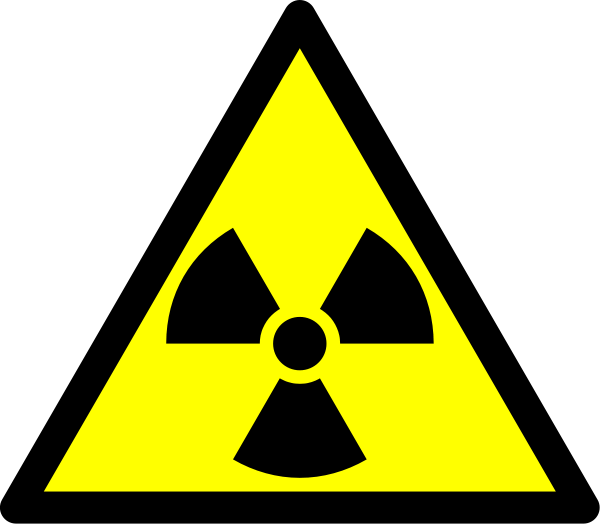

Overview
Technetium did not arrive on earth in any appreciable amount until 1937 when a molybdenum atom was bombarded with deuterons by Carlo Perrier and Emilio Segrè. This was not for lack of trying because element 43’s existence was predicted by Mendeleev in the mid 19th century (1). Technetium’s distinction as being a man made element, however, is only one of its curious aspects. As one might suspect it is also exclusively radioactive, being unstable in every form. Still, technetium has managed to be useful in several applications including chemical synthesis, nanoscale nuclear batteries, and nuclear medicine (1,2,3,4).
Bioavailability and Uptake
Although Technetium has isotopes with mass numbers ranging from 85 to 118 only 10 are regularly seen and of those only 3 are abundant, those being 97Tc, 98Tc, 99Tc. Technetium-99 is the most abundant of all isotopes since it is a major fission product in nuclear reactors (5). Moreover, the use of Technetium-99m in nuclear medicine is increasing Technetium-99 abundance. Technetium-99m is a metastable isotope that is a gamma decay product of Molybdenum-99, another abundant fissile product. Indeed the amount of Tc in the environment is going up in all its forms but especially Tc-99. Besides industry professionals who may handle Tc or encounter it in their work, the most common form of uptake is through water and food and even at that there is very little data to support how much is taken up. Since Tc-99m is a nuclear medicine tool, this is how it is most often encountered in humans. It is often intravenously injected in a molecular form that is best suited for a certain diagnostic purpose. Technetium’s characteristics, however, allow it to pass through the body with ease and quickly (2,4).
Tc-99m/Tc99
Technetium-99m is the most prevalent diagnostic agent in nuclear medicine. It accounts for 85% of all diagnostic scans and is used around 20 million times per year (1). It is through its unique characteristics as a metastable radioactive isotope that gives it this dominance in the field. The first thing to note is that it is a powerful tool for looking inside a person because it emits gamma radiation that is easily detected (140.5 KeV) and provides a high resolution.
More importantly, the amount of radiation it gives off is low enough that it is not detrimental to the patient. A common injection for a diagnostic test is 250 MBq which would give a radiation dose of 0.05 Sv, far below the demarcation for radiation poisoning or harm.

Techentium-99m has a half-life of around 6 hours so there is plenty of time for any test and then the agent loses most of its radiation, furthermore the biological half-life of Tc in general is about 1 day so there is little time for it to do any damage at all. An added benefit to the entire process is that Tc-99m is produced from the decay of Mo99 which has a half-life of 66 hours, giving the agent a form in which it can travel and have some shelf-life.
There has even been ome debate as to the positive effects of low-level radiation, like the kind that Tc-99m gives, because it activates DNA repair mechanisms in the body that can fix existing mutations (2). A final reason for its selection as the premiere diagnostic agent is Tc-99m non-specificity in the human body giving it the ability to identity many different organs depending on the molecular structure that is attached to Tc. In one application, Tc-99m is even being used as a diagnostic for cancer by conjugating the metal with an antibody that is adept at identifying certain carcinomas (3). Some designs look for increased mitochondrial activity, others for certain macrophages or various immunological markers, all depending on the goal of the diagnostic. Ironically, capabilities are limited only by the knowledge of human disease.
Harmful Effects, Toxicology, Radiation
With the discussion of Tc-99m it seems like it is almost too good to be true and that it must have its drawbacks somewhere. Indeed there is one drawback and that is that it still produces Tc-99 eventually and its half-life is 210,000 years.

Indeed, we may getting ahead of ourselves with all the applications of nuclear physics, in that the problem of what to do with the waste is not yet solved or even really seriously being considered. The radiation from external Tc, however, is not harmful unless in close proximity or really internally present. The key issue is then that it may not be a problem now but its accumulation in the environment can do unexpectedly disastrous things. Internally Tc99 is the only real threat and Tc-99 is easily taken up into plants and animals but does not seem to do any damage as it is just as easily metabolized by biological chelating agents. In humans the same is true where metallothionens take care of the metal efficiently. According to the EPA, the cancer coefficient for Tc-99 and Tc-99m, through food and water ingestion, is 4.28 E-11 and 1.22 E-12 (Bq-1), this epidemiological figure “takes into account age and gender dependence of intake, metabolism, dosimetry, radiogenic risk and competing causes of death in estimating the risks to health from internal or external exposure to radionucleotides (7). Unfortunately this is only understandable to those well versed in epidemiology or radiation in general, so for reference, K40 a radioactive isotope of potassium that is regularly ingested and currently resides in the human body in high amounts (~140g ) has a cancer coefficient of 4.30 E-10, a whole order of magnitude higher and it is in us all the time for our entire lives (8). The matter of radiation is general is somewhat perplexing as relatively unstudied. Indeed this is the case for technetium where internal threat is cautioned but does not really seem to be a threat.

Conclusion
This investigation in general has brought about the knowledge that radiation poisoning is relatively unstudied and little is known about what is tolerable and what is detrimental. But currently Tc-99m is an overwhelmingly powerful medicinal tool that seems to help more people than it hurts. With more research and understanding it can only be solidified as a truly entirely beneficial material.
References
(1) Technetium <http://en.wikipedia.org/wiki/Technetium (2007)>.
(2) Kemerink, Gerrit. J. Nuc. Med., 44 947-952 (2003).
(3) Burcheil, Scott. J. Nuc. Med., 30 1351-1357 (1989).
(4) Hoh, Karl. Nuclear Medicine and Biology, 30 457-464 (2003).
(5) Agronne National Laboratory EVS. Human Health Fact Sheet (2005).
(6) Sievert <http://en.wikipedia.org/wiki/Sievert (2007)>.
(7) EPA. Federal Guidance Report No.13, (1999).
(8) Rowland, R.P. The Radioactivity of the Adult Human Body
Image Sources
Technetium Metal
Scan
Structure TC99m
Tc99m – Generator
Tc99m-Tc99
Tc99 uses
Decay table
Radioactive
{kind=link}
{kind=link}
Author: Noah Manson Prescott
- Alzheimer's 1 2
- Antibiotics
- Antifouling Paint
- Arthritis
- Ayurvedic Medicine
- Breast Feeding
- Cancer Therapy
- Cattle Feed
- Cerebral Ischemia
- Chelation Therapy
- Chernobyl
- Chicken Feed
- Chocolate
- Cigarettes
- Coal 1 2
- Copper Mining
- Cremation
- Diabetes
- Electronic Waste
- Hat Making
- Hard Metal Disease
- Hybrid Cars
- Imaging 1 2 3 4
- Industrial Pollution
- Jewelry Allergy
- Lead Poisoning
- Lewisite
- Magnetic Particles
- Makeup
- Mountain Top Removal
- MRI Imaging
- Neurotoxicity
- Nuclear Power
- Nuclear Weapons
- Ouch Ouch Disease
- Peripheral Neuropathy
- PET Imaging
- Photodynamic Therapy
- Phytoremediation
- Pregnancy
- Radioactivity 1 2
- Seafood
- Sunscreens
- Tattoos
- Vaccines
- Wound Healing